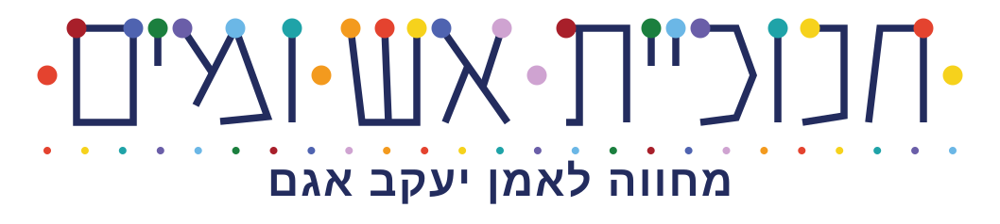

חנוכייה של ליבי ונעמי, בהשראת המזרקה "אש ומים" בכיכר דיזנגוף
על החנוכייה
יעקב אגם, מאבות האמנות הקינטית, הלך לעולמו ביוני השנה. רצינו לעשות לו מחווה, ובחרנו ביצירה המוכרת שלו בתל אביב: המזרקה "אש ומים".
החנוכייה בנויה מטבעות מסתובבות בפסים צבעוניים, כמו התוף של המזרקה. כשמסובבים אותן, מתגלים סמלים של חנוכה.